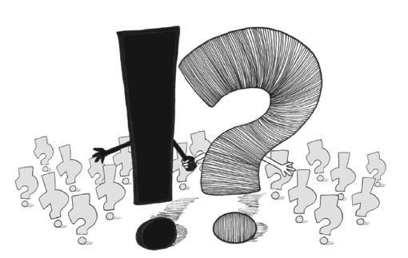

6. Kết Luận: Một Tương Lai Tươi Sáng, Không Chắc Chắn

“Không còn kiểu sống rời rạc mảnh vụn nữa.
Chỉ còn nối kết…”
E. M. Forster, Howards End , 1910
 Một ngày không có điều bất ngờ
Một ngày không có điều bất ngờ
Bảy giờ. Sáng thứ hai. Đồng hồ báo thức réo vang. Bạn nhấn nút “snooze”. Mục tiêu của việc thức dậy ở đây là gì?
Đây là ngày không có điều bất ngờ. Vì một lý do nào đó, bạn đã có được kịch bản diễn biến của mọi việc sắp diễn ra trong hai mươi bốn giờ tới. Tất cả đều nằm trong kịch bản. Những sự kiện. Những người mà bạn sẽ gặp. Những biến cố lớn cũng như các sự kiện chi tiết đến từng phút. Suy nghĩ của bạn. Cảm xúc của bạn.
Niềm phấn khích ban đầu của bạn khi được đọc kịch bản dần dần nhường chỗ cho cảm giác trống rỗng, kiệt sức khi sự thích thú, hồi hộp của điều bất ngờ bị thay thế bằng... uhm, không có gì cả.
Có rất nhiều lý do khiến ta kinh hãi những điều không mong đợi, nhưng hãy tự hỏi xem liệu bạn có thật sự muốn đánh đổi những điều bất ngờ dữ dội thi thoảng xảy đến với ta để lấy một cuộc đời mà bạn biết rõ hết việc gì đã được xếp đặt phía trước. Một tương lai chắc chắn hẳn sẽ khiến ta sống trong nhàm chán thường xuyên. Niềm vui thích khi có những điều bất ngờ và sự bí ẩn mê hoặc mà chúng ta gọi là tương lai chính là những thành phần thiết yếu của hạnh phúc. Nếu không phải như vậy, thì có lẽ các tù nhân đang chịu án chung thân sẽ là những người hạnh phúc nhất trên trái đất này.
Vẻ đẹp của điều không mong đợi
Quyển sách này bắt đầu với một loạt các sự kiện không mong đợi đã làm chúng ta kinh sợ – từ các thảm họa tự nhiên đến các thảm họa do con người tạo ra – nhưng nó tiếp tục cho thấy rằng điều không mong đợi có thể là nguồn gốc của nhiều điều tốt đẹp – từ những bất ngờ thú vị cho đến các sáng kiến mới lạ, đột phá. Điều không mong đợi là một sức mạnh lớn lao có khả năng khiến chúng ta đưa ra những suy nghĩ mới, sáng tạo những ý tưởng mới và thách thức những giả định xưa cũ. Nó cung cấp sức mạnh cho hoạt động sáng tạo, khoa học, phát triển cá nhân và tiến bộ xã hội. Ngay cả những sự kiện xấu cũng có thể dẫn đến một ngày mai tốt đẹp hơn khi những biện pháp an toàn nảy sinh, giúp hoàn thiện cuộc sống và chúng ta buộc phải tìm những cách thức mới để giải quyết vấn đề.
Điều không mong đợi là một sức mạnh lớn lao, có khả năng khiến chúng ta đưa ra những suy nghĩ mới
Nhan đề của một quyển sách ra gần đây đã truyền đạt tốt vấn đề trên: Giả kim thuật tăng trưởng. Tăng trưởng, dù đó đối với cá nhân hay trong doanh nghiệp và xã hội, đều là tạo nên một cái gì đó từ con số không, giống như những gì mà một nhà giả kim làm, và thành phần bí mật của tăng trưởng chính là điều không mong đợi. Trước khi tìm ra các phát minh, người ta thường cho rằng không thể đạt đến được những phát minh như vậy. Trong một cuộc phỏng vấn, phó chủ tịch mảng sáng tạo của một công ty đa quốc gia lớn, một người đàn ông được cho là đã phát minh ra Wi-Fi, giải thích sự thành công của mình với tư cách là một người đổi mới như sau: “Đã có ít nhất hai mươi bài báo hàn lâm nói rằng Wi-Fi sẽ không bao giờ hoạt động được trên thực tế. Tôi tin rằng họ đã sai và xác định là phải đi tìm giải pháp.” Từ con số không tạo nên một cái gì đó, đó là bản chất thuật giả kim của tăng trưởng. Tính chất này lặp đi lặp lại không chỉ trong lĩnh vực kinh doanh mà trong cả văn hóa đại chúng, chính trị và tiến bộ xã hội. Từ sự xuất hiện của các hiện tượng văn hóa đại chúng như Dan Brown và Coldplay đến sự sụp đổ của các chế độ độc tài. Điều không mong đợi luôn luẩn quất đâu đó nơi cốt lõi của những sự kiện trên. Điều không mong đợi chính là cuộc sống.
Một thời đại không chắc chắn
Một số người cho rằng công nghệ thông tin sẽ dần dần từng bước làm mất đi các yếu tố không thể tiên đoán được, bởi lẽ các bộ xử lý đầy sức mạnh sẽ có khả năng xử lý nhanh chóng mọi loại thông tin và đưa ra dự đoán chính xác về tất cả các kết quả có thể hình dung được. Các hội nghị về công nghệ thông tin và các chiến dịch xây dựng thương hiệu trên khắp thế giới nói về sự chuyển đổi từ “đoán” sang “biết”. Tạp chí công nghệ Wired thậm chí đã đi xa hơn khi báo trước cái chết của chính khoa học. Tạp chí này lập luận rằng, với sự xuất hiện của các máy vi tính tính bằng đơn vị petabyte, các giả thuyết có thể được xây dựng và trả lời nhanh chóng trong thời gian thực, loại bỏ nhu cầu phải có các thử nghiệm không chắc chắn, kéo dài mà khoa học thường căn cứ vào. Người ta cũng đưa ra các lập luận tương tự đối với lĩnh vực quản lý rủi ro (“Các máy vi tính sẽ có khả năng dự đoán chính xác mọi thứ có khả năng phạm sai lầm”), cũng như đối với tương lai của tiêu thụ truyền thông (“Các thuật toán sẽ dự đoán những bộ phim nào bạn sẽ thưởng thức, loại bỏ nhu cầu cần có các nhà phê bình”).
Điều mà các kịch bản về tương lai như những lập luận trên đây – có thể là chúng rất ly kỳ thú vị – không tính đến chính là bản chất khó nắm bắt của điều bất ngờ. Giống như những ranh giới của trí tuệ con người, những ranh giới của điều bất ngờ cứ tiếp tục thay đổi, đơn giản bởi nó là sản phẩm từ trí tưởng tượng của chúng ta một từ được con người phát minh để phục vụ nhu cầu của chúng ta. Điều mà chúng ta kỳ vọng trong cuộc sống thay đổi giữa các cá nhân và thế hệ. Những gì có vẻ như bất thường đối với chúng ta có thể chỉ đơn giản như là một bước đi trong công viên đối với con cái của chúng ta. Hãy nghĩ xem “một hành động khủng bố” hoặc “tính dễ biến động của thị trường chứng khoán” có ý nghĩa gì đối với các thế hệ trước và so sánh ý nghĩa đó với ý nghĩa mà chúng ta nhận thức về chúng ngày nay. Bộ não con người luôn luôn có nhu cầu muốn xem xét các mô hình, tìm ra lời lý giải và ý nghĩa của chúng. Điều này là không thể thay đổi, cho đến khi sự tiến hóa đưa đến cho bộ não ta một chiều hướng mới mẻ bất ngờ nào đó.
Những gì có vẻ như bất thường đối với chúng ta có thể chỉ đơn giản như là một bước đi trong công viên đối với con cái của chúng ta
Điều thực sự thay đổi là mối quan hệ của chúng ta với sự không chắc chắn, và tôi sẽ nói rằng chúng ta hiện thấy thoải mái với sự không chắc chắn hơn bao giờ hết. Hãy nghĩ về ý nghĩa của chính bản thân cuộc sống. Chúng ta đã từng sống trong một thế giới mà mọi ý nghĩa đều được xác định sẵn cho ta, và chúng ta ít có cơ hội để nghi ngờ những học thuyết được định ra bởi các văn bản thần thánh hay những sự trói buộc của một hệ thống tầng lớp cứng nhắc, gia trưởng. Khi các nhà bình luận xã hội đôi lúc tiếc nuối cho sự thiếu vắng ý nghĩa trong xã hội hiện đại, người ta có thể chỉ hy vọng rằng các nhà bình luận đó không phải là muốn nhìn thấy sự trở lại của một xã hội với tôn ti trên-dưới hẹp hòi, ngột ngạt của ngày hôm qua. Hôm nay, không còn ý nghĩa gì nữa, và hầu hết các xã hội trên toàn thế giới đều dạy thế hệ trẻ của họ đi ra ngoài và tự mình khám phá xã hội: trong dòng chảy đều đều của những hành động, suy nghĩ và sự việc xảy ra xung quanh, tôi hoàn toàn có toàn quyền quyết định để ghép những điều này lại với nhau để tìm ra ý nghĩa. Một ẩn dụ và một sự so sánh nảy ra trong đầu khi mô tả sự chuyển đổi này. Ẩn dụ là về một con đường đã từng thẳng tắp và được gắn đầy các bảng chỉ đường. Ngày nay, nó là một lối đi lờ mờ quanh co được bao quanh bởi một cảnh quan ngoạn mục nhưng đôi khi lại đầy hiểm nguy. Sự so sánh là về các thể loại văn học. Cách thức sáng tạo ý nghĩa cũ là cách thức có thể tìm thấy nơi hầu hết các tiểu thuyết bán chạy nhất: một cách kể chuyện thẳng thắn, cốt truyện rõ ràng và đơn giản. Cách thức sáng tạo ý nghĩa mới là cách thức giống như trong thơ ca: để ngỏ và ta có nhiều cách hiểu khác nhau.
Thành công trong một bài thơ
Vào mùa đông năm 2002, tờ The Economist cùng công ty dầu khí Shell đã mở một cuộc thi viết luận . Chủ đề được đưa ra là câu hỏi “Chúng ta nên bỏ đi bao nhiêu tự do vì sự an ninh của chính chúng ta?” – một câu hỏi phổ biến sau hậu quả của vụ tấn công khủng bố 11/9. Câu hỏi này không mới và nhiều triết gia cũng đã trình bày quan điểm về vấn đề này – lời của Nam tước Montesquieu bỗng hiện ra trong đầu “Tự do là được làm bất cứ điều gì pháp luật cho phép”. Bài luận đoạt giải khá là đặc biệt. Jack Gordon, một công dân ở Minnesota, lúc đầu dường như lạc đề hoàn toàn khi nói về chuyến du ngoạn bằng thuyền yêu thích của mình trên hồ Superior, nhưng anh ta đã sử dụng câu chuyện này để đưa ra sự trùng hợp chua xót:
“An toàn là điều tốt, nhưng như một nỗi ám ảnh, nó làm mục nát tâm hồn ta. Nếu tôi sống được đến chín mươi tuổi, và tôi được yêu cầu chứng minh với những bậc cao niên khác sống trong viện dưỡng lão rằng cuộc đời tôi đã trải qua điều gì đó đặc biệt hơn là việc đoán chính xác giữa bơ và bơ thực vật – cái nào là cái nào, thì tôi sẽ nói về cơn giông bão sấm sét ngày ấy ở hồ Superior. Tôi sẽ mô tả về cuộc chiến đấu hiểm nghèo để giữ cho con thuyền tách ra khỏi nhóm chỉ vừa đủ tránh khỏi cơn gió nhằm duy trì tốc độ con thuyền, và chiếc búa gõ ầm ầm với một cánh buồm chính được kìm lái theo gần đúng hướng gió, đã liều lĩnh gắng gượng chống trả cơn gió có tốc độ 75 dặm biển. Tôi sẽ nói về cách chúng tôi túm tụm vào nhau lộn xộn trong buồng lái, mắt hướng về phía trước thật căng thẳng bởi vì nhìn về phía đuôi tàu có nghĩa là có một hình ảnh thoáng qua trên nền chớp lóe sáng về chiếc thuyền cao su mà chúng tôi lai dắt, nổi hoàn toàn trên mặt nước và xoay mòng mòng như chong chóng về phía cuối dòng.
Mặc dù nhiều người trong số những người nghe cảm thấy dễ chịu, với pho mát và bánh quy giòn và những thứ tương tự, tôi không nghĩ là tôi sẽ có nhiều điều lắm để kể về những giờ phút tôi đã trải qua trên hồ Superior với những cánh buồm được cuốn lại, lướt đi trong sự an toàn tuyệt đối trên mặt nước phẳng lặng và trong bầu không khí buồn tẻ.” 1
Có nhiều cách khác nhau để lý giải điều gì đã xảy ra trên thế giới trong thập kỷ vừa qua, và chúng ta đã thấy ở chương trước rằng có nhiều lựa chọn như thế nào để mô tả thật sinh động mọi sự kiện lệch chuẩn như là bằng chứng của một cuộc chạy đua đến đáy của tính nhân văn. Điều mà bài luận của Gordon và quyển sách này thôi thúc chúng ta là hãy cải tạo sự không chắc chắn từ những ràng buộc của nỗi sợ hãi và đặt nó vững chắc làm trung tâm của cuộc sống. Cuộc sống là việc chấp nhận cơ hội và rủi ro, và sẽ không thể được gọi là “rủi ro” nếu như không có khía cạnh tiêu cực có khả năng xảy ra. Nhà du hành vũ trụ John Glenn, vào ít phút trước khi con tàu vũ trụ được phóng lên không gian, đã có phát biểu nổi tiếng về điều này như sau: “Lạy Chúa tôi, tôi đang ngồi trên một đống hồ sơ có giá dự thầu thấp”.